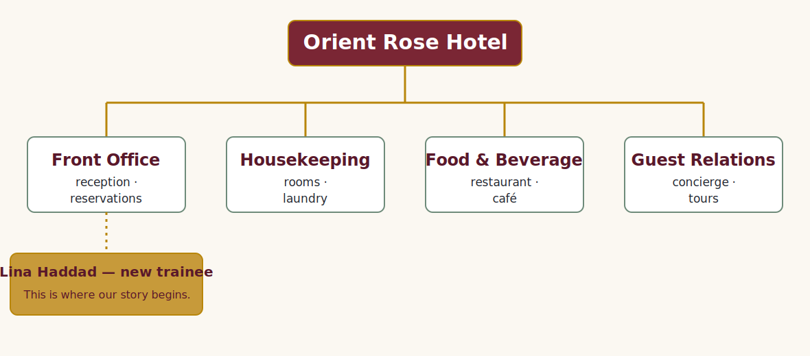

English for the Hospitality Industry — Orient Rose Hotel, Damascus

By the end of this Warm Up you can name the departments of a hotel, say which one a colleague works in, and greet a guest arriving in the morning.
By the end of Part 1 you can name the people who work in a hotel and what each one does, name the things on a front desk, and choose the right greeting for the time of day.
By the end of Part 2 you can tell a daily routine from something happening now, and choose the present simple or the present continuous for each.
Grammar — The Present Simple and Present Continuous
4 activities
Grammar — The Present Simple and Present Continuous (2)
1 activity
By the end of Part 3 you can follow a short conversation at the front desk and one between colleagues, and answer questions about who is who.
By the end of Part 4 you can introduce yourself and your job, welcome a guest to the hotel, and ask a colleague about their work.
By the end of Part 5 you can read about a receptionist's day and say what makes a good first impression.
By the end of Part 6 you can write a short self-introduction for a new colleague to read.
By the end of Part 7 you can describe how a hotel team helps each other, and say why the guest comes first.
By the end of Part 8 you can use this unit's words and both present tenses together, without being told which to choose.
By the end of Part 9 you can decide what to do when the desk, the telephone and a porter all need you at once, and say why in that order.
By the end of Part 10 you can use this unit's vocabulary and grammar again without prompting, and tick honestly what you can now do.
By the end of Part 11 you can take one step beyond the unit: use a longer introduction and a fuller description of your role.